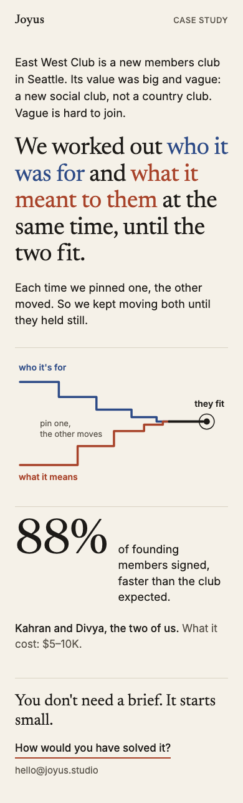
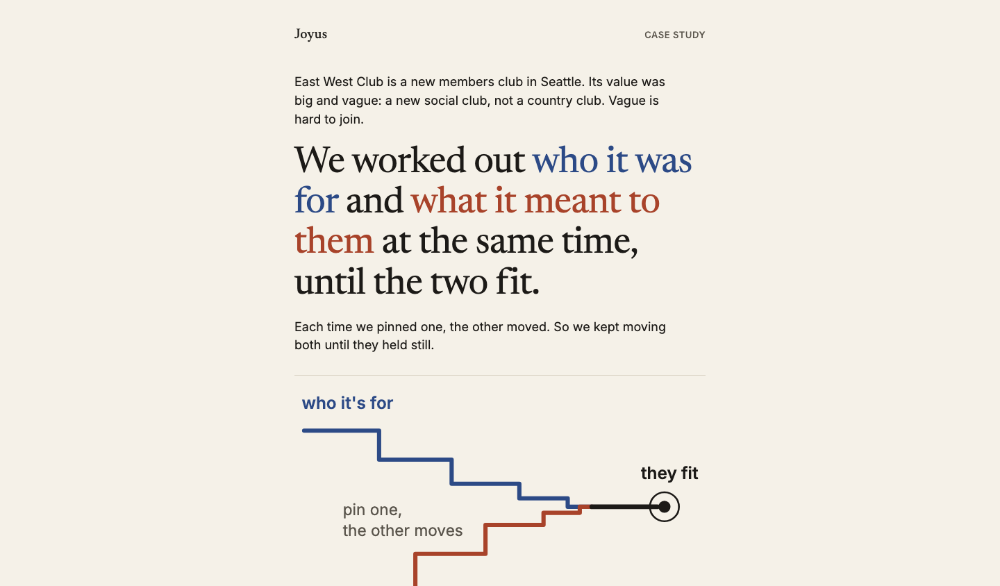
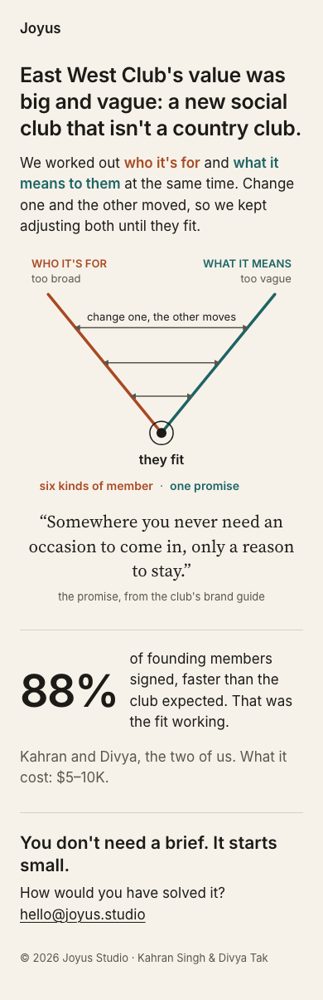
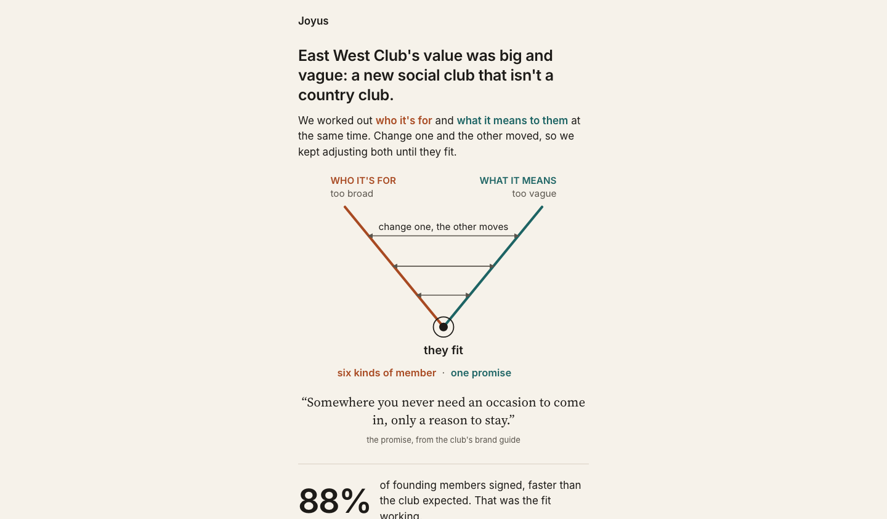
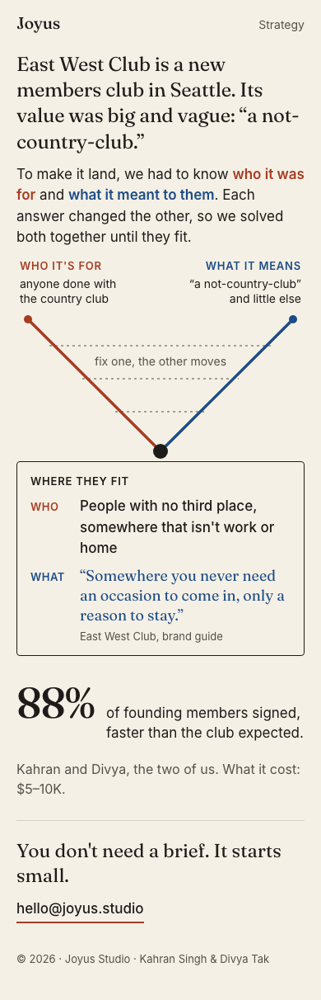
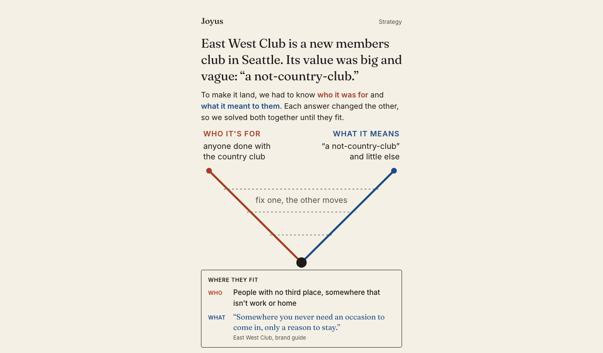

Study 89 · 8 November 2026 · for Kahran
EWC, say less: one insight, four ways
Kahran on Study 88: "This is getting much better, but it's losing the insight because of all the detail." So a new brief (brief.md): one insight, said in plain sentences on the first screen, one picture, one proof, at most three phone screens and about 120 words of ours. The builders had no earlier studies, only the brief. Their pages went through the blind judges again, with a new test: a stranger reads the page from screenshots and says back what the studio figured out, in their own words, scored of 2. Then the ten-second test on screen one (two readers), the 21 bet questions, and a rank. These are the four that passed, each as built, in the rank's order.
"ewc needed to feel accessible and desirable to the right people. This meant to take the big amorphous value of we are making a 'not country club' or new social club and figure out what that meant to people, which also meant you had to figure out who those people were. And then it was a question of solving the equation, if you will, when everything can be moving, because the customer base was moving and the value deliverable was moving, so you have to find a sustainable place of maxima/equilibrium."
Kahran, 8 Nov, the frame (lightly tidied for typing)."This is getting much better, but it's losing the insight because of all the detail."
Kahran, 8 Nov, on Study 88.a · One Sentence
Ten-second test: 1, 1 · insight say-back 1 of 2 · the bet 21 of 42 · ranked 1st · 1283px on a phone, 1.5 screens
Fixes the stated problem outright. The method is the giant headline: work out who it was for and what it meant to them at the same time, until the two fit. You get the insight in about 3 seconds before any detail. The staircase graphic restates it instead of adding to it, and then it goes straight to 88%, $5-10K and 'How would you have solved it?'. That last line is the best invitation to write of the four, because it puts the founder inside the problem. Weaknesses: the line under the headline ('Each time we pinned one...') repeats the headline. It also never says what the fit turned out to be, so it stays abstract. One concrete line of the answer would make it airtight.
The reader, in their own words: "They worked out who East West Club (a new Seattle members club) was for and what it meant to those people together, adjusting each against the other until the two fit. That cleared up a vague "new social club, not a country club" value, and 88% of founding members signed faster than expected. The idea of tuning two linked things at once comes through clearly. I can't tell what the club actually ended up being, who it is for, or what it means, so the specific insight is missing and only the method is visible." (blind, from screenshots)


b · Narrowing V
Ten-second test: 1, 1 · insight say-back 1 of 2 · the bet 17 of 42 · ranked 2nd · 1204px on a phone, 1.4 screens
Close second. The headline is the problem (big and vague), not the insight, so the method sits in the second paragraph. The V with arrows that shrink is the clearest picture of 'change one, the other moves' in the set. 'Six kinds of member · one promise' plus the brand-guide quote gives a concrete payoff without a table. '88%... That was the fit working' ties the result back to the idea. It has the same good 'How would you have solved it?' ask. It loses to One Sentence only because you read further before you meet the insight.
The reader, in their own words: "They worked out that East West Club's idea was big and vague, a new kind of social club that isn't a country club. The studio fixed it by tuning who it's for and what it means together until the two fit: six kinds of member and one promise ("a reason to stay"). The proof offered is that 88% of founding members signed, faster than expected. The insight comes through, though the "change one, the other moves" diagram carries most of it, and the $5–10K cost line and the "how would you have solved it?" ending are more sales pitch than insight." (blind, from screenshots)


c · Where both hold still
Ten-second test: 1, 1 · insight say-back 1 of 2 · the bet 20 of 42 · ranked 3rd · 1212px on a phone, 1.4 screens
Same idea as Narrowing V, but the bordered WHERE THEY FIT box is heavier. Two labelled rows plus a quote and a citation feel like a deliverable, not a takeaway. The insight is in a body paragraph under a serif headline about the club, not about what the studio figured out. The V has no endpoint labels for what changed, only 'fix one, the other moves'. The CTA is a bare email with no question, so less pull to write.
The reader, in their own words: "They worked out that East West Club's vague "not-country-club" pitch only landed once they fixed who it was for and what it meant together. The result was people with no third place, and "somewhere you never need an occasion to come in, only a reason to stay," which got 88% of founding members signed. The V diagram is clear, but the insight is partly buried in the detail. The 88% and the $5–10K cost show up late, and the "fix one, the other moves" idea took a second read to pin down." (blind, from screenshots)


d · The equation, cut
Ten-second test: 1, 1 · insight say-back 1 of 2 · the bet 19 of 42 · ranked 4th · 1012px on a phone, 1.2 screens
This is the page the complaint is about. The headline 'We made it specific' says nothing about how. The insight is buried in bold inside a 6-line paragraph. Then a six-row persona-to-reason table (Quiet connector, Country-club guy, Semi-retired operator...) takes the whole middle of the screen. A busy founder skims rows about someone else's members and leaves knowing the club's segments, not the studio's move. The pink, teal and yellow palette also reads off-brand next to the other three.
The reader, in their own words: "I think they paired each type of member with what the club has to mean to that person, and kept adjusting both until six people and six reasons fit. But it's a lot to read: the table of six pairs, the 88% figure and the $5–10K cost crowd out that idea, so I only half got it. The headline says "big and vague, made specific", and the list of pairs shows that more than it explains it." (blind, from screenshots)


How it was put together
Each page is the file the blind judges saw (src/a.html to src/d.html), joined into one page by build.cjs: the asked-for option keeps its own font, style and body, the other three leave the page. Nothing redesigned, no words moved. The note under each option is the judges' rank reason; the reader's words are the say-back. Every reader got the method (who and what, solved together) and none got the answer: each scored 1 of 2, and the top-ranked page was faulted for never saying what the fit turned out to be. For comparison, Study 88's four scored 1, 1 or 1, 2 on the ten-second test and 28 to 30 of 42 on the bet; these are shorter on purpose and score lower on the bet (17 to 21). check.cjs pins the rules: four options, no names, no money but the price and the 88%, no placeholders, no em dash in our words, at most three phone screens.